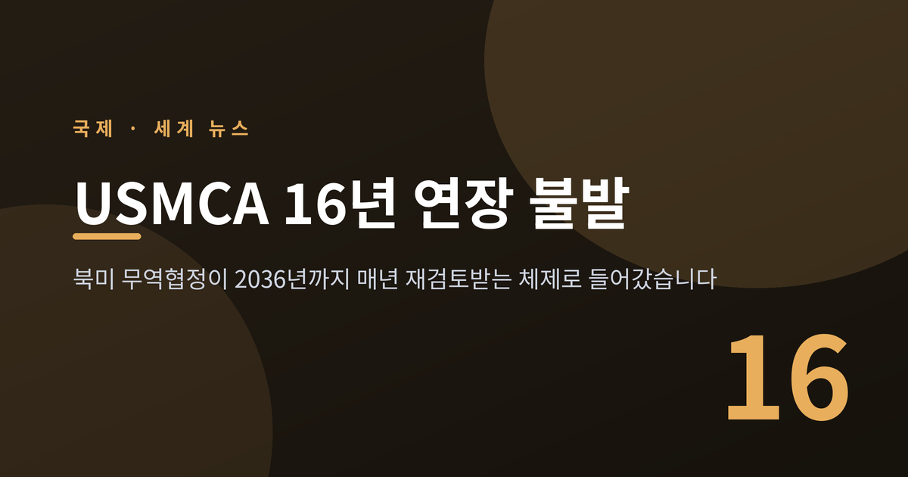
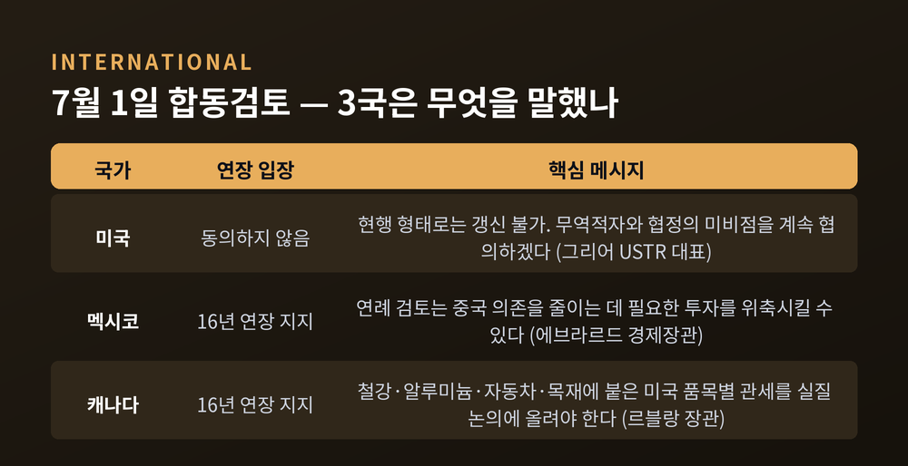
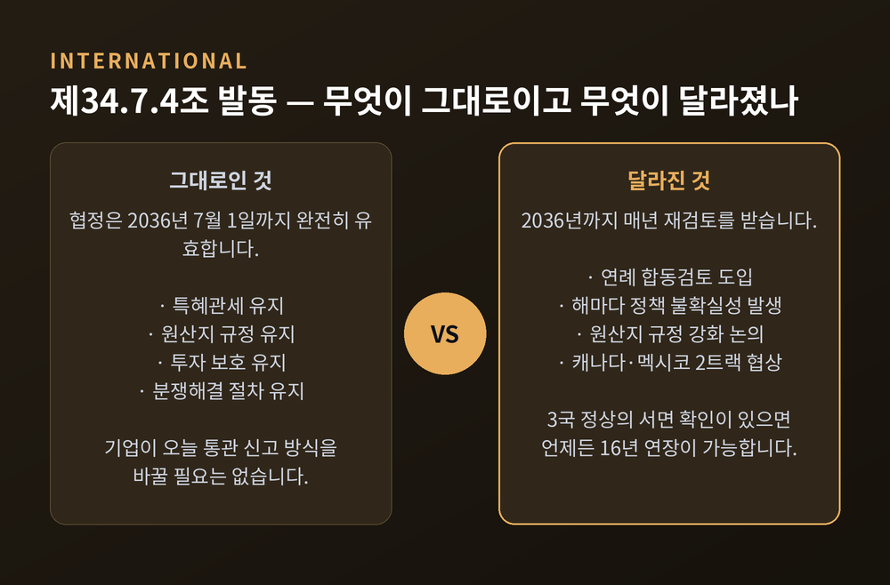
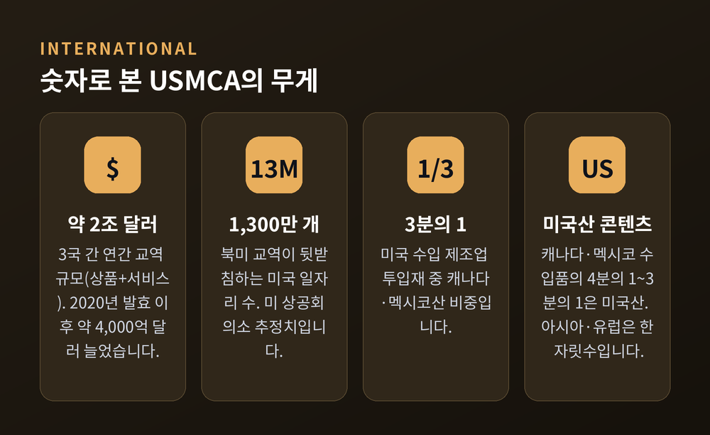
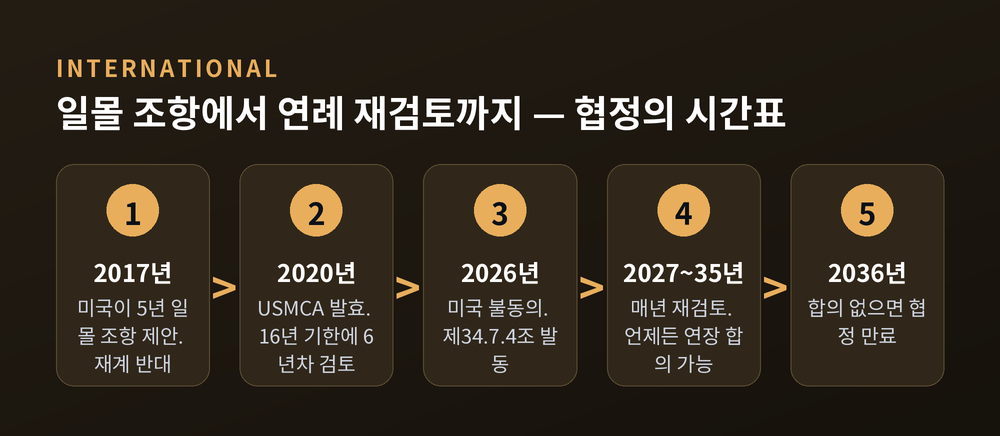
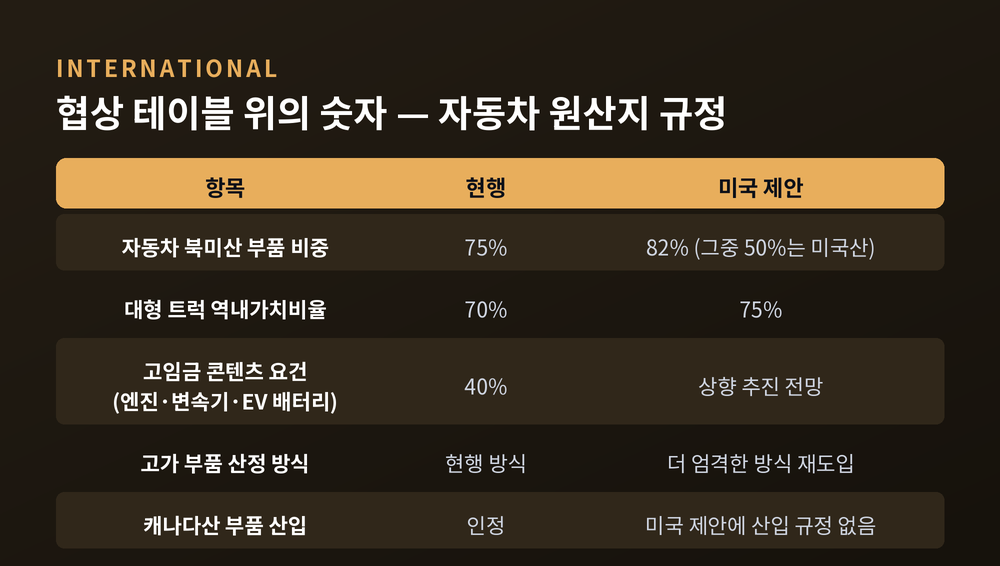
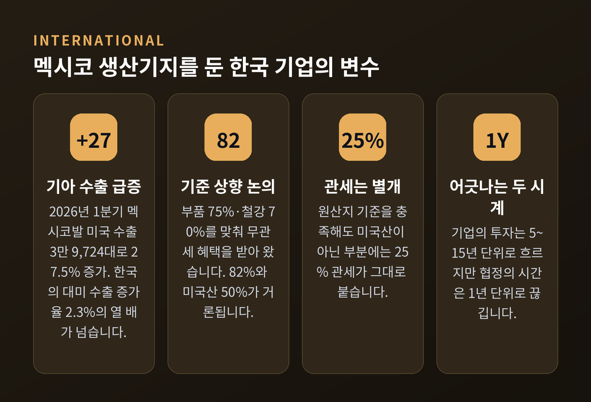

USMCA 16년 연장 불발, 북미 무역협정이 매년 재검토받게 된 이유

이번 글에서는 2026년 7월 1일 미국이 USMCA 연장에 동의하지 않으면서 벌어진 일을 정리해 보겠습니다. 협정이 폐기된 것인지, 무엇이 실제로 바뀌었는지, 멕시코에 공장을 둔 한국 기업에는 어떤 변수가 생겼는지를 차례로 짚습니다.
세 줄 요약
- 2026년 7월 1일 미국·멕시코·캐나다가 화상으로 합동검토를 열었고, 미국이 현행 형태의 16년 연장에 동의하지 않았습니다. 멕시코와 캐나다는 연장을 지지했습니다.
- 협정이 끝난 것은 아닙니다. USMCA는 2036년 7월 1일까지 완전히 유효합니다. 무산된 것은 '그 너머로 더 연장하는 선택'입니다.
- 대신 제34.7.4조가 발동해 2036년까지 매년 재검토를 반복하게 됐습니다. 3국 정상이 서면으로 확인하면 언제든 16년 연장이 가능합니다.
7월 1일, 화상회의에서 벌어진 일
USMCA에는 발효 6주년에 협정을 점검하도록 한 조항이 있습니다. 제34.7.2조입니다.
2020년 7월 1일 발효였으니 그 6주년이 2026년 7월 1일이었습니다. 3국 정부 대표로 구성된 자유무역위원회가 이날 화상으로 모였습니다.
제이미슨 그리어 미국 무역대표부(USTR) 대표의 성명은 짧고 분명했습니다. "미국은 현행 형태의 USMCA 갱신에 동의하지 않았다"는 것입니다.
같은 자리에서 멕시코와 캐나다는 16년 연장을 지지한다고 각각 확인했습니다. 세 나라 중 한 나라만 손을 들지 않은 셈입니다.
마르셀로 에브라르드 멕시코 경제장관, 도미닉 르블랑 캐나다 대미무역장관이 회의에 함께했습니다. 캐나다는 이미 6월 1일 르블랑 장관 명의의 서한으로 갱신 지지 의사를 전달해 둔 상태였습니다.

'갱신 안 됨'과 '협정 종료'는 다릅니다
여기서 오해가 생기기 쉽습니다.
USTR 성명의 마지막 문장은 "결과적으로 USMCA는 갱신되지 않았다"였습니다. 이 표현만 보면 협정이 사라진 것처럼 읽힙니다.
로펌 화이트앤케이스(White & Case)는 이 지점을 분명히 정리했습니다. USTR의 표현에도 불구하고 협정은 실효하지도, 만료하지도 않았다는 것입니다.
제34.7.1조에 따라 USMCA의 기한은 발효일로부터 16년, 즉 2036년 7월 1일까지입니다. 7월 1일에 일어나지 않은 것은 협정을 그 너머로 연장하는 선택적 결정이었을 뿐입니다.
그래서 지금 이 순간에도 그대로인 것들이 있습니다.
- 특혜관세
- 원산지 규정
- 투자 보호
- 분쟁해결 절차
기업이 오늘 당장 통관 신고 방식을 바꿀 필요도 없습니다. 그리어 대표 성명에도 "협정은 유효하게 유지된다"는 문구가 들어 있습니다.

제34.7.4조가 켠 두 개의 스위치
한 나라라도 연장을 확인하지 않으면 제34.7.4조가 작동합니다. 두 가지가 따라옵니다.
첫째, 연례 합동검토입니다. 자유무역위원회는 남은 기간 동안 매년 검토 회의를 열어야 합니다. 2036년 7월 1일까지 해마다 반복됩니다.
둘째, '언제든지' 연장하는 경로입니다. 3국은 만료 전 어느 시점에서든 각국 정부수반의 서면 확인만으로 추가 16년 연장에 합의할 수 있습니다. 정식 재협상 절차를 새로 밟을 필요가 없습니다.
이 두 번째 조항이 중요합니다. 16년 연장은 사라진 것이 아니라 미뤄진 것입니다.
왜 중요한가 — 2조 달러라는 무게
숫자를 보면 이 협정의 무게가 잡힙니다.
| 항목 | 규모 |
|---|---|
| 3국 간 교역 (상품+서비스) | 약 2조 달러 |
| 2020년 발효 이후 증가액 | 약 4,000억 달러 |
| 역내 상품교역 | 2020년 1조 700억 달러 → 2024년 1조 6,300억 달러 이상 |
| 미국 수입 제조업 투입재 중 캐나다·멕시코산 | 3분의 1 |
| 북미 교역이 뒷받침하는 미국 일자리 | 약 1,300만 개 (미 상공회의소 추정) |
한 가지 지표가 특히 눈에 띕니다. 미국이 캐나다·멕시코에서 수입하는 물건의 4분의 1에서 3분의 1은 원래 미국에서 만든 것입니다. 아시아나 유럽에서 수입하는 물건에서는 이 비율이 한 자릿수에 그칩니다.
에릭 밀러 리도포토맥전략그룹 대표는 이 촘촘한 역내 연계가 결국 USMCA를 살릴 수 있다고 봅니다. 2025년 3월 트럼프 대통령이 USMCA 원산지를 충족한 물품 상당수를 관세에서 면제한 것도 같은 이유였다는 설명입니다.

미국이 내놓은 명분
미국 측 논거는 몇 갈래로 정리됩니다.
무역적자가 첫 번째입니다. CNBC는 트럼프 대통령의 "일차적" 우려가 두 나라와의 무역적자라고 전했습니다. 행정부는 USMCA가 협정을 현대화하는 데는 성공했지만, 무역적자는 오히려 늘었다는 입장입니다. 실제로 미국의 대멕시코 무역적자는 USMCA 발효 이후 두 배가 됐습니다.
중국산 우회 환적이 두 번째입니다. 중국산 물품이 멕시코를 거쳐 미국 관세를 피해 간다는 문제 제기입니다. 하워드 러트닉 상무장관, 피터 나바로 통상담당 선임고문 등이 반복해서 지적해 왔습니다.
미국 자동차 제조업의 성장 부진이 세 번째입니다.
브라운스타인(Brownstein) 분석에 따르면 행정부는 "원 협정의 실질적 문제" 때문에 현 상태로 "고무도장"을 찍을 수는 없다는 입장을 밝혔습니다. 여기에 산업 일자리 감소, 아시아에 대한 경제적 의존 심화도 우려로 거론됩니다.
멕시코와 캐나다는 무엇을 말하나
멕시코는 연장을 지지하면서도 연례 검토의 부작용을 짚었습니다. 에브라르드 장관은 해마다 되풀이되는 검토가 불안정을 낳아 멕시코가 중국 의존을 줄여나가는 일을 오히려 어렵게 만들 수 있다고 경고했습니다. 상시 검토 구조가 "북미 공급망을 강화하고 아시아 의존을 줄이는 데 필요한 바로 그 투자를 질식시킬 위험"이 있다는 것입니다. 다만 그는 3국 사이에 합의를 가로막을 실질적 이견은 없다고도 말했습니다.
멕시코가 그은 선도 있습니다. 미국 계절 농산물 생산자들이 계절관세할당을 요구하는 데 대해 에브라르드 장관은 그런 변경은 받아들이지 않겠다고 공개적으로 밝혔습니다. 미국이 밀어붙이면 농산물 수입처를 다른 곳에서 찾겠다고 했습니다.
캐나다의 우선순위는 다릅니다. 르블랑 장관은 3국이 "논의를 계속하는 것의 중요성에 합의했다"고 밝히면서, 철강·알루미늄·자동차·목재에 붙은 미국의 품목별 관세를 실질 논의에 올리는 것이 캐나다의 과제라고 확인했습니다.
캐나다와 미국의 협상은 아직 텍스트 단계에 들어가지 않았습니다. 그리어 대표는 캐나다와의 대화가 "더 어려웠다"고 평했고, 릭 스위처 USTR 부대표는 마크 카니 총리를 두고 "정치적 과실"이라는 표현까지 썼습니다.
캐나다 쪽 시선은 정반대입니다. 밀러 대표는 미-캐나다 관계가 "현대사에서 가장 낮은 지점"에 있다고 진단합니다. 2025년 2~4월 미국이 전 교역상대국에 관세를 매겼을 때 보복관세로 맞선 나라는 캐나다와 중국뿐이었습니다. 스티븐 하퍼 전 총리는 2026년 2월 캐나다가 미국 의존을 줄이기 위해 "필요한 어떤 희생도 감수해야 한다"고 말했습니다.
케일리 마이먼 혹 조지타운대 겸임교수는 캐나다와 멕시코의 물음을 이렇게 요약합니다. 232조·301조 관세가 시장 접근을 갉아먹는다면, USMCA의 가치는 무엇인가.
일몰 조항은 어떻게 태어났나
지금의 구조를 이해하려면 8년 전으로 가야 합니다.
2017년 NAFTA 재협상에 착수하면서 미국은 파트너국에 대한 지속적 레버리지를 원했습니다. 그래서 나온 것이 5년 일몰 조항 제안이었습니다. 5년 뒤 대통령이 협정 지속 여부를 결정하는 구조입니다. 당시 USTR 관계자는 협정이 낡아지는 것을 막으려면 그런 압력이 필요하다고 주장했습니다.
반대가 만만치 않았습니다. 캐나다·멕시코는 물론 미국 재계 상당수가 반대했습니다. 투자 결정에 반복적 불확실성을 주입한다는 이유였습니다. 미 의회 청문회에서도 의원들이 민간 투자를 위축시킨다며 의무 검토 조항에 의문을 제기했습니다.
타협의 결과가 지금의 제34.7조입니다. 갱신 가능한 16년 기한에 6년차 합동검토를 얹은 구조입니다. 정기적인 점검 시점은 확보하되, 짧은 기한이 낳을 경제적 불확실성은 피하자는 절충이었습니다. 통상협정에서 전례를 찾기 어려운 새로운 개념이기도 했습니다.
예전엔 "5년마다 협정의 생사를 묻자"는 제안이 있었고, 지금은 "매년 연장을 물어보되 협정은 2036년까지 살려두자"는 구조가 작동합니다. 8년 전 반대론자들이 걱정한 그림과 완전히 다르지는 않은 국면입니다.

협상 테이블 위의 숫자 — 75%에서 82%로
미국이 실제로 요구하는 내용은 구체적입니다. 브라운스타인 분석 기준입니다.
| 항목 | 현행 | 미국 제안 |
|---|---|---|
| 자동차 북미산 부품 비중 | 75% | 82% (그중 50%는 미국산) |
| 대형 트럭 역내가치비율 | 70% | 75% |
| 고임금 콘텐츠 요건(엔진·변속기·EV 배터리 등) | 40% | 상향 추진 전망 |
여기에 고가 부품에 대한 더 엄격한 산정 방식 재도입, 중국산 원료를 걸러내기 위한 철강·알루미늄 조달 감시 강화도 포함됩니다.
주목할 대목이 하나 더 있습니다. 미국의 자동차 제안에는 캐나다산 부품을 북미 콘텐츠 총량에 산입하는 규정이 빠져 있습니다. 북미를 하나의 생산 플랫폼으로 다뤄온 기업에게는 규칙이 갈라질 수 있다는 초기 신호입니다.
다만 실무적으로는 쉽지 않습니다. 수십 년의 오프쇼어링 끝에 와이어링 하네스 같은 핵심 부품은 미국 안에서 대규모로 조달하기 어렵습니다. 제안된 기준을 단기간에 맞추기가 매우 어렵다는 것이 브라운스타인의 평가입니다.

한국 기업에 생긴 불확실성
멕시코에 공장을 둔 한국 기업에는 어떤 변수가 생겼을까요.
기아는 멕시코 누에보레온주 페스케리아 공장에서 미국 수출을 오히려 늘려 왔습니다. 2026년 1분기 멕시코발 미국 수출은 3만 9,724대로 전년 동기 대비 27.5% 증가했습니다. 같은 기간 한국의 대미 수출 증가율이 2.3%였으니 열 배가 넘는 증가폭입니다.
문제는 그 성장이 무관세 혜택 위에 서 있다는 점입니다. 부품 비중 75%, 철강·알루미늄 비중 70%를 맞춰 혜택을 받아 왔는데, 논의 중인 기준은 82%와 미국산 별도 50%입니다. 기준이 오르면 멕시코 생산 차량의 원가 부담이 커집니다.
현대차는 멕시코에 공장이 없습니다. 다만 260억 달러 규모 미국 투자 계획에 멕시코산 투싼 생산라인을 앨라배마 공장으로 옮기는 방안을 포함했습니다. 현대차·기아는 미국 내 생산 비중을 늘리면서 멕시코 공장 활용을 병행하는 전략을 검토 중인 것으로 전해집니다.
멕시코에 동반 진출한 중소·중견 부품 협력사들까지 연쇄적으로 영향을 받을 수 있다는 것이 업계의 시각입니다.
참고할 사례가 있습니다. 토요타는 7월 6일 멕시코 티후아나 공장의 타코마 픽업트럭 생산라인을 텍사스로 옮기기로 했습니다. 샌안토니오 공장에 36억 달러를 투자해 4년에 걸쳐 이전합니다. 토요타 북미법인은 2026회계연도에 관세 여파로 영업이익이 85억 달러 줄며 적자로 돌아섰습니다. 업계는 관세 외에 미국 내 생산 인센티브, 환율, 물류비도 함께 작용했다고 봅니다. 셰인바움 멕시코 대통령은 이 결정이 협정 재검토와 무관한 "글로벌 재편 과정"이라고 설명했습니다.
여기서 짚어야 할 구조가 있습니다. 미국은 2025년부터 수입 완성차·부품에 25% 관세를 매기고 있습니다. 협정 원산지 기준을 충족한 차량이라도 미국산이 아닌 부분에는 이 관세가 그대로 붙습니다. 원산지 규정과 관세가 별개로 작동한다는 뜻입니다.

앞으로 무엇을 봐야 하나
가까운 일정은 7월 20일 주간 멕시코시티에서 열리는 미-멕시코 3차 양자 협상입니다. 미결 쟁점 해소가 목표입니다. 캐나다는 참가자로 발표되지 않았습니다.
전문가들의 시선은 갈립니다.
디에고 마로킨 비타르 CSIS 펠로우는 이번 일을 "결별이 아니라 연장전"으로 봅니다. 다만 오래 끌수록 피해가 쌓인다고 지적합니다. 그 피해는 급작스러운 하락이 아니라 '부재'로 나타난다는 것입니다. 짓지 않은 공장, 만들어지지 않은 일자리, 다들 결말을 기다리는 사이 조용히 다른 곳에 자리 잡는 공급망입니다. 지금 자본을 움직일 수 있는 것은 또 하나의 관세 위협이 아니라 "몇 라운드가 남았는지에 대한 숫자"라고 그는 말합니다.
마이먼 혹 교수는 이글스의 노래를 빌려 "호텔 캘리포니아"에 비유합니다. 탈퇴 위협은 계속되겠지만 경제적 타격이 워낙 커서 실제 탈퇴 가능성은 낮다고 봅니다. 대신 검토가 끝나지 않는 상태가 이어질 것이라는 전망입니다.
후안 카를로스 베이커 전 멕시코 통상차관은 다른 각도를 제시합니다. 많은 논평이 이번 결정을 멕시코·캐나다에 대한 타격으로 전제하지만, 비용은 세 나라가 함께 진다는 것입니다. 미국의 제조업체·투자자·소비자도 예측 가능한 제도적 틀에 의존하고 있기 때문입니다. 그는 불확실성이 투자를 지연시키기 시작하면 미국 기업들이 협상 타결을 지지하는 세력이 될 가능성이 높다고 봅니다.
윌리엄 앨런 라인시 CSIS 선임고문은 아무도 묻지 않는 질문을 던집니다. 개정된 협정이 나오면 의회 승인을 받아야 하는가. 원 USMCA는 무역촉진권한(TPA)에 따라 의회 승인을 거쳤지만, TPA는 2021년 만료됐습니다. 절차를 정리해 줄 장치가 없는 상태입니다. 그는 이 문제에 대해 "아직 말하기 이르다"고 덧붙였습니다.
기업이 대비해야 할 시나리오는 세 갈래로 정리됩니다.
- USMCA 보호가 대체로 유지되는 현상 유지
- 더 엄격한 콘텐츠 요건을 담은 재협상 협정
- 역내 규칙이 서로 갈라지는 별도 양자 협정
정리하면 이렇습니다.
7월 1일에 무너진 것은 협정이 아니라 협정의 시간표였습니다. USMCA는 2036년까지 그대로 살아 있고, 관세도 원산지 규정도 어제와 같습니다. 다만 이제 이 협정은 10년 동안 매년 "계속할 것인가"라는 질문을 받게 됐습니다.
세 나라 정상이 서명 하나로 16년을 되돌릴 수 있다는 사실은 그대로입니다. 문이 닫힌 것이 아니라, 문 앞에 매년 서 있어야 하는 구조가 된 것입니다.
기업의 시간은 5년, 10년, 15년 단위로 흐릅니다. 협정의 시간은 이제 1년 단위로 끊깁니다. 이 두 시계의 어긋남이 앞으로 몇 해를 규정할 것입니다.
가장 큰 비용은 관세가 아닐지도 모릅니다. "결말을 기다리는 시간" 자체일 수 있습니다.
다음 장면은 7월 20일 멕시코시티에서 시작됩니다. 그 자리에서 몇 라운드가 남았는지에 대한 답이 나올지, 지켜볼 일입니다.